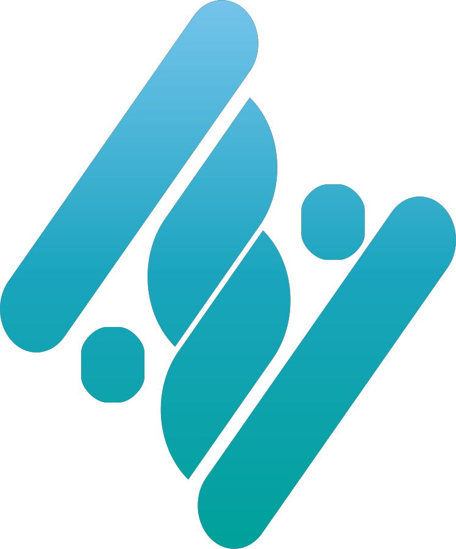
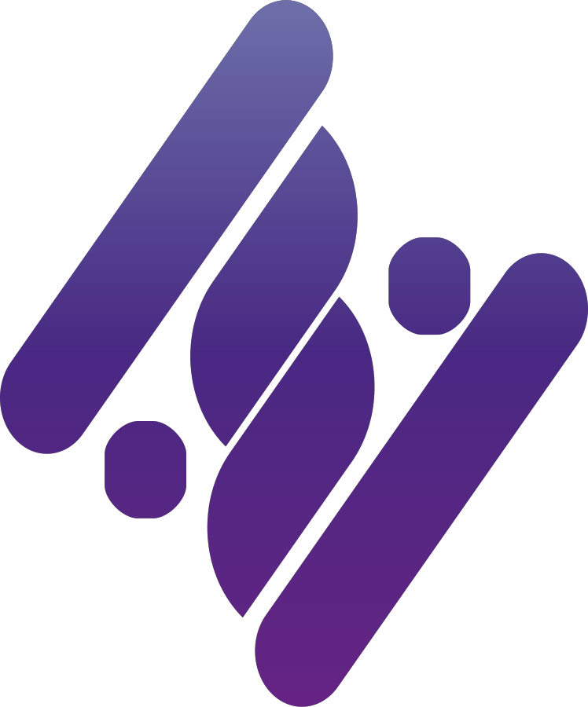
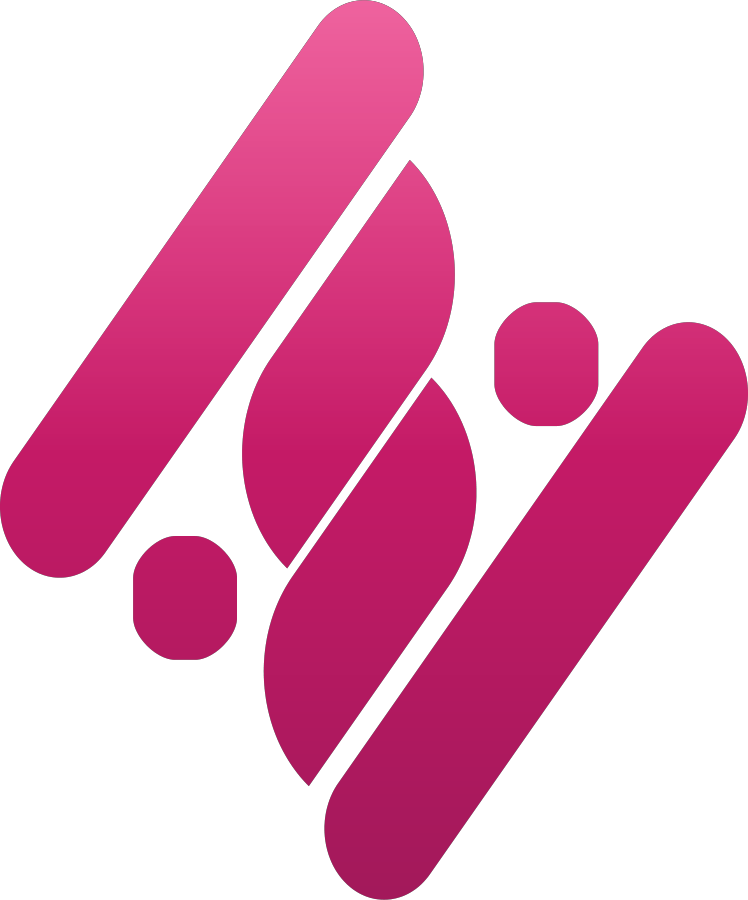

Nespace, la empresa
Un espacio para tu negocio, no un programa suelto
Nespace transforma tu negocio tradicional en un negocio digital y administrable — Gestión es el primer producto del ecosistema, y no el último.
Disponible ahora

Nespace Gestión
ERP para talleres y servicios técnicos — el producto de esta página.
En camino

Nespace Web
Páginas y presencia digital para el negocio.
En camino
Nespace Commerce
Tienda online conectada a tu operación.
En camino

Nespace CMS
Contenido y sitio administrables sin depender de un desarrollador.
En camino

Nespace CRM
Seguimiento comercial y relación con clientes.
En camino
Nespace Custom
Desarrollos a medida sobre la misma base.
El isotipo es el mismo en todo el ecosistema — cada producto tiene su propio degradado de color, misma identidad de fondo.